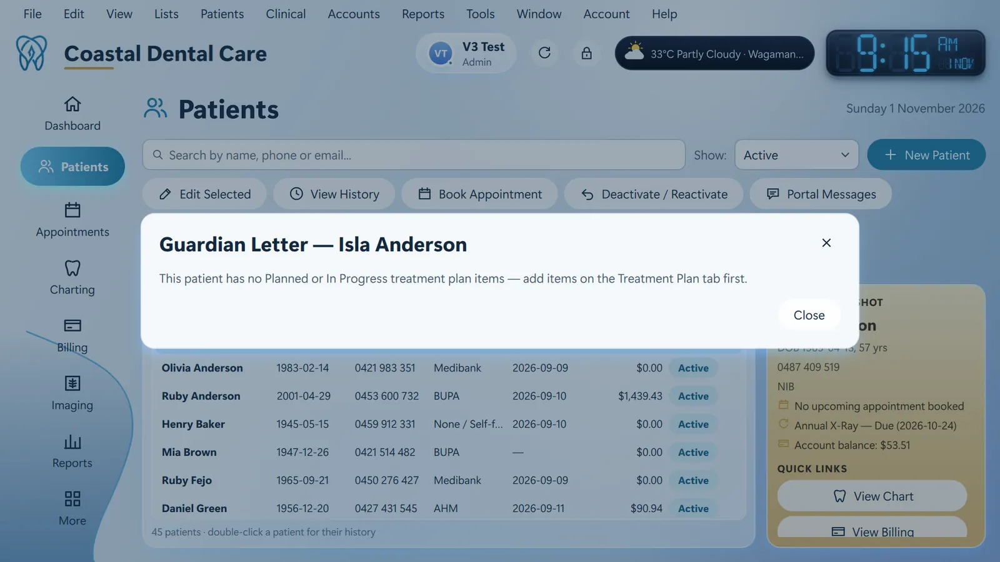
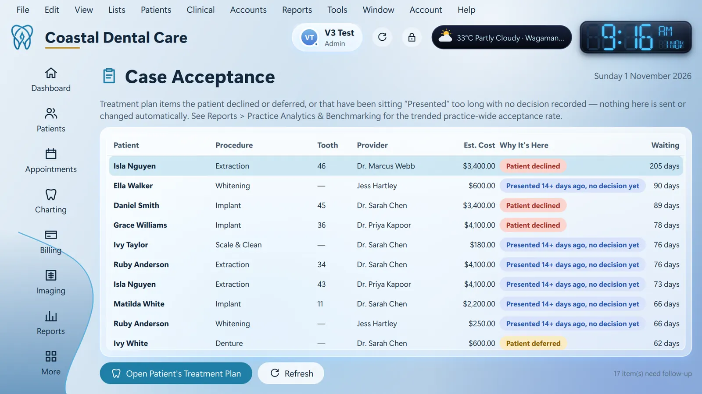
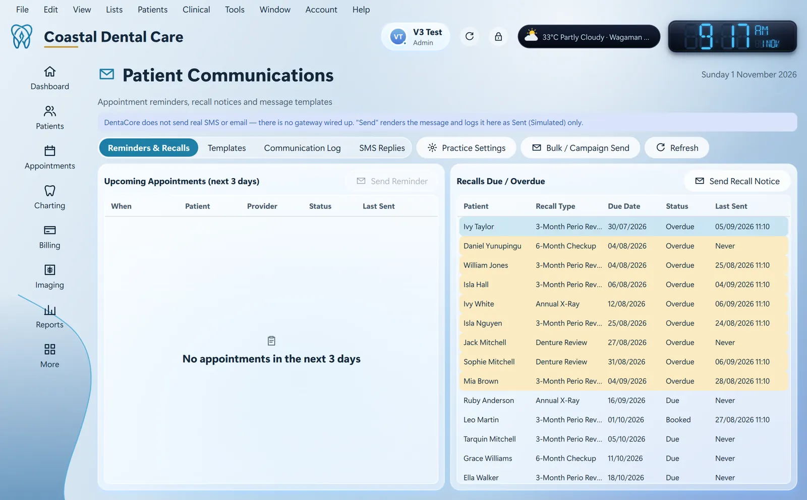

01 / 05 · New patients & consultations
Forms the family fills in at home
Patients → Send Intake Form
New patients fill in their medical history on their own phone before the consultation, not on a clipboard in the waiting room.
- Send a one-time link by SMS or email, to the patient or a parent.
- Medical history, allergies and emergency contacts, then each consent the practice attaches.
- Each consent is signed by drawing a signature with a finger, stylus or mouse.
- Nothing changes the record until a staff member reviews the form and applies it.
- The signed consent is kept as a PDF.

02 / 05 · New patients & consultations
The consultation opens the case card
Charting → Ortho Case
Every orthodontic patient has one case card, started at the consultation.
- The phase starts at Consultation: seen, with no decision yet.
- Record the consultation date, the proposed appliance and your notes.
- Move the card to Observation, or straight to Active when treatment starts.
- Every change is kept in the audit log.

03 / 05 · New patients & consultations
A letter the parent understands
Charting → Guardian Letter
For a young patient, the parent gets a clear explanation of the plan, not a clinical note.
- Tick the plan items to include. Each is explained from the practice's own plain-English phrasebook.
- Add what this family needs to know, with payment and appointment wording.
- Optionally translate it into the family's language, with a note to check anything unclear.
- Print, save as a PDF or email it. Every letter is logged.

04 / 05 · New patients & consultations
Follow up the families still deciding
More → Case Acceptance
One list of every plan that needs another conversation, so a family who said “we'll think about it” isn't forgotten.
- Plans the family declined or deferred.
- Plans left as Presented longer than the number of days you choose.
- Double-click to open the patient's plan.
- Nothing is sent automatically. Staff decide how to follow up and record what happened.

05 / 05 · New patients & consultations
Observation patients, called back on time
Communications → Reminders & Recalls
Children who aren't ready to start are watched until the time is right, and recalls make sure they come back.
- Put the case card in Observation: watching growth or eruption before starting.
- Add a recall with its due date and a note of what you're waiting for.
- Recall notices can go out by themselves, no more than once a month.
- The Dashboard counts everyone in observation.
